Как напечатать текст на изображении
Напечатать текст на фотографии или рисунке можно в бесплатной программе, которая встроена в систему Windows. Называется она Paint.
Для ее запуска щелкните по Пуск, в списке найдите «Стандартные-Windows» и выберите Paint.
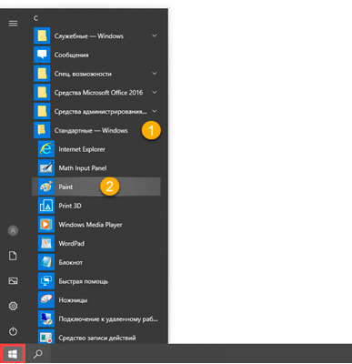Примерно так выглядит программа:
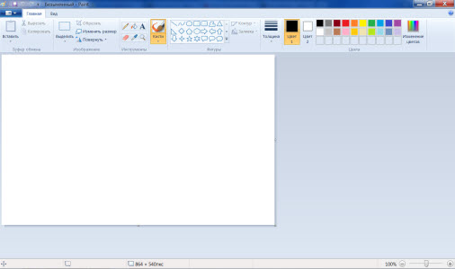Сначала откройте в ней то фото или картинку, на которую нужно нанести надпись. Для этого нажмите на Файл в левом верхнем углу и щелкните по «Открыть».
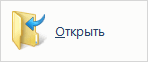Появится окно для выбора картинки. Обычно компьютер предлагает найти ее в папке «Изображения», но можно указать и другое место. Для этого воспользуйтесь левой частью окошка.
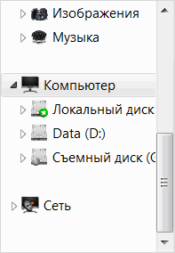Когда откроете нужное место и найдете рисунок (фото), кликните по нему два раза левой кнопкой мышки.
Чтобы найти изображение быстрее, щелкните правой кнопкой внутри окошка (по белой части), из списка выберите «Вид» и укажите «Крупные значки», «Огромные значки» или «Эскизы страниц».
Изображение добавится в программу. Часто оно довольно большого размера и целиком не помещается (как будто обрезается). Для уменьшения масштаба используйте ползунок в правом нижнем углу.
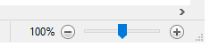Теперь, когда картинка открыта, на ней можно напечатать текст. Для этого щелкните по кнопке с буквой «А» в верхней панели.
Далее наведите на ту часть фото, где хотите сделать надпись, и кликните один раз левой кнопкой мыши. Высветится область для ввода текста.
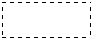При этом в верхней панели программы появятся инструменты оформления: шрифт, размер букв, начертание (полужирный, курсив и другие).
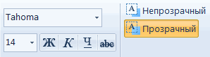Рядом можно выбрать цвет букв.
По умолчанию текст будет печататься на прозрачном фоне. Но иногда нужно, чтобы он находился на плашке какого-то цвета. В этом случае кликните по пункту «Непрозрачный» вверху, затем по «Цвет 2» и выберите заливку.
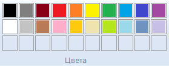Укажите нужные параметры (шрифт, размер и другие) и напечатайте текст.
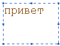Если в процессе нужно изменить настройки, выделите буквы. Для этого нажмите левую кнопку мышки в конце набранного текста и, не отпуская ее, тяните в начало.
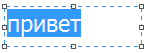Когда надпись выделится (закрасится), можно изменить ее через верхнюю панель — увеличить или уменьшить размер, поменять шрифт, сделать полужирной, курсивной или подчеркнуть.
Кстати, размер букв можно указать и больше максимального значения (72). Для этого удалить цифры в поле выбора, напечатать другие (например, 150) и нажать клавишу Enter на клавиатуре.
Для закрепления надписи (окончательного её нанесения) щелкните по пустому месту левой кнопкой мыши.
На заметку. После печати у вас, скорее всего, не получится отредактировать надпись. Можно будет только отменить ее, нажав на иконку вверху:
Как сохранить
Чтобы внести изменения в рисунок, то есть записать его в компьютер в новом виде, нужно сделать сохранение. Самый простой способ: нажать на пункт «Файл» в левом верхнем углу программы и выбрать «Сохранить». Или нажать на иконку с изображением дискеты
В этом случае изначальное фото перезапишется — заменится новым вариантом.
Но я рекомендую поступать иначе: сохранять копию картинки. Тогда на компьютере будет два варианта: и изначальный, и с надписью. Для этого щелкните по пункту «Файл» в левом верхнем углу и выберите «Сохранить как...».
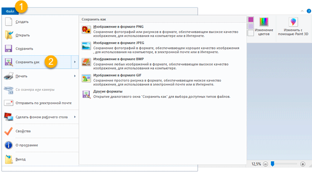Появится окошко, в котором перейдите в ту папку компьютера, куда нужно записать новое фото. Например, на Рабочий стол.
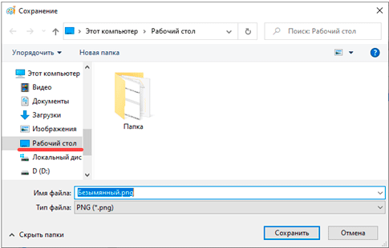В поле «Имя файла» введите для него название. То есть сотрите то, которое указано по умолчанию, и наберите другое (например, цифру). И щелкните по «Сохранить».
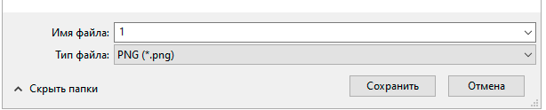Картинка будет записана в то место и под тем названием, которое вы выбрали.